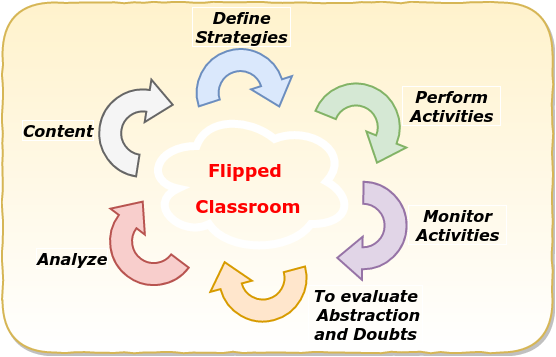

Projeto de Intervenção: Um novo formato de avaliação final nos cursos de especialização da PMBA
A educação superior brasileira tem sido objeto de muitas críticas, seja no tocante à infraestrutura das universidades, seja no tocante à qualificação dos corpos docentes e discentes, seja ainda no tocante às estruturas curriculares, bem como aos processos de ensino-aprendizagem, aí inseridos os métodos e os critérios de avaliação. “Como se pode constatar, o tema da avaliação representa uma área critica também no Ensino Superior, pois pesquisas recentes vem apontando as dificuldades e os impasses vividos por professores universitários ao avaliar os seus alunos,...” CHAVES – UFG. Como em toda a trajetória escolar, a avaliação é um dos pontos mais sensíveis do ambiente acadêmico, causando verdadeiro pânico em alguns atores da relação educacional. Mas antes de se averiguar a profundidade desse temor, é necessário se compreender a verdadeira finalidade da avaliação no processo educativo brasileiro. “Estamos vivendo no Brasil atualmente um momento de reconstrução do cotidiano escolar e a avaliação ocupa um papel preponderante nessa redefinição, devido principalmente a sua relação com o fracasso escolar e a percepção das implicações e determinações da avaliação na formação profissional”.CHAVES – UFG. Além de aferir a apropriação dos conteúdos pelo corpo discente, a avaliação se presta também a contribuir com processo de transmissão do conhecimento, uma vez que no ensino superior, em certamente medida, são utilizados como instrumentos de avaliação, procedimentos que em verdade são ferramentas de produção do conhecimento. São os conhecidos papers, resenhas, artigos, monografias, dissertações e teses. Tais documentos acadêmicos guardam uma característica comum, qual seja o forte conteúdo teórico, faltando-lhes por vezes a objetividade para a aplicação prática de uma ideia profundamente desenvolvida em um trabalho acadêmico. Eis que num ambiente acadêmico policial militar, após anos de produção acadêmica no formato de monografia, evolui-se para um formato mais objetivo, com leve fundamentação teórica, mas, sobretudo, com ampla expertise e aplicabilidade prática no ambiente institucional. Assim, neste trabalho de conclusão de curso (TCC) do Curso de Especialização em Docência do Ensino Superior da Universidade Salvador (UNIFACS), pretende-se abordar o projeto de intervenção como novo formato de avaliação nos cursos de especialização da PMBA, analisando-se as suas peculiaridades e observâncias aos preceitos normativos pertinentes aos trabalhos acadêmicos da educação superior, mormente ao segmento da pós-graduação. Entendendo qualificado o suficiente o corpo discente dos dois cursos de especialização realizados na Academia de Polícia Militar da Bahia, a ponto de identificar problemas institucionais vinculados ao Programa de Metas da Corporação e apontar soluções para o comando da PM baiana, o Exmº Senhor Coronel PM Comandante Geral da PMBA, instituiu por meio da Portaria nº 126/2015, o Projeto de Intervenção como modelo de trabalho de conclusão de curso tanto para o Curso de Especialização em Segurança Pública (CESP), quanto para o Curso de Especialização em Gestão Estratégica de Segurança Pública (CEGESP). Sob o viés da gestão organizacional, tal iniciativa traduz-se como uma ação de valorização do público interno, uma vez que permite aos oficiais intermediários e superiores a contribuir para a solução de problemas afetos à administração da PMBA, instituição quase bicentenária e presente nos 417 (quatrocentos e dezessete) municípios baianos. Numa estrutura militar e rigidamente hierarquizada, ouvir os subordinados pode parecer fraqueza, mas no caso em tela, em verdade é uma grande sabedoria, posto que anualmente cerca de 100 (cem) oficiais frequentam e concluem os citados cursos de especialização profissional, ocasião em que a PMBA pode ver tratados com relativa minudência e ao mesmo tempo com enfoque na baixa complexidade, baixo custo financeiro e fácil exequibilidade pelo menos uma centena de assuntos que podem ser melhorados, simplificados e, sobretudo transformar a realidade administrativa ou operacional da corporação. Ante estas informações, a par de se investigar a validade metodológica dos aludidos projetos de intervenção resultantes dos CESP e CEGESP na PMBA, pergunta-se: Os trabalhos de conclusão dos cursos de especialização da PMBA atendem aos preceitos da Associação Brasileira de Normas Técnicas (ABNT) enquanto trabalhos acadêmicos? Considerando a aplicação deste formato de TCC nos anos de 2016 e 2017, tendo sido aprovados todo o corpo discente, inclusive, com o efetivo aproveitamento de 19 (dezenove) dos projetos de intervenção elaborados na PMBA em 2016, somado ao formato de apresentação oral e depósito de exemplar escrito aprovado no acervo da biblioteca da APM, presumi-se, ab initio, que o modelo instituído pela PMBA esteja compatível com as exigências formais e metodológicas do ambiente acadêmico para o reconhecimento dos projetos de intervenção como trabalhos acadêmicos de conclusão de curso. Tem-se, pois, enquanto objetivo geral do presente trabalho, verificar se os projetos de intervenção produzidos como trabalhos de conclusão dos cursos de especialização da PMBA atendem aos critérios de validade de um trabalho acadêmico tipo TCC. Idem, especificamente, objetiva o trabalho: a) Apresentar aspectos da avaliação do ensino superior na contemporaneidade; b) Analisar o novo cenário acadêmico das avaliações finais dos cursos de especialização da PMBA, CESP e CEGESP, a partir de 2016; c) Identificar o grau de aproveitamento pela PMBA dos TCC produzidos enquanto projeto de intervenção; Este trabalho se justifica pela necessidade de avaliar o alinhamento e o cumprimento dos requisitos de validade previstos nas normas vigentes (ABNT) dos trabalhos de conclusão dos cursos de especialização da PMBA, no formato de projeto de intervenção, a fim de resguardar a instituição e seus discentes no tocante à validade e ao reconhecimento dos cursos como superiores de pós-graduação. O trabalho será construído com base nas técnicas de pesquisa, a saber: Pesquisa bibliográfica; Estudo de campo (entrevistas e questionários); Consoante o magistério de Cerqueira (2013), no que tange a metodologia, pretende- se utilizar o método hipotético-dedutivo, valendo-se da pesquisa exploratória, cuja coleta de dados será a transversal. A coleta e análise dos dados se darão tanto por pesquisa bibliográfica, quanto por pesquisa-ação junto ao corpo discente (pós- graduação CEGESP/2017) e junto ao Comando Geral da Polícia Militar da Bahia. Por fim, terá o trabalho em tela o enfoque qualitativo enquanto pesquisa. O marco referencial será o biênio 2016/2017.
Método: Pesquisa-Ação
Figure 1 The proposed strategy has the goal to create conditions to tailor cloud computing scenarios to be compatible with the two course syllabus. This will enable the alignment of each topic of the course plan with the cloud computing resources/services. We decide to focus on the Operating Systems and System Analysis and Design courses for the following two reasons. The first is the potential to explore the use of cloud resources \cite{mokhtar2013cloud}. The second is the opportunity to illustrate how to perform analysis activities (aiming at characterizing and describing the problem \cite{jackson2000software}). in Figure 1

|
The activities are posted in the Blackboard portal \footnote{http://www.blackboard.com/}. It is a virtual learning environment adopted at Universidade Salvador (UNIFACS) for both face-to-face and distance learning courses. The planned activities for each course are registered in Blackboard. The activities can be reached at \footnote{http://www.sourceminer.org/cloudeducation.html}.
|  |
{kind=link}
Caracterização do Curso de Especialização da PMBA
An operating system (OS) is a large and complex set of system programs that control the various operations of a computer system and provide a collection of services to other (user) programs. The purpose of an operating system involves two key goals: i) Availability of a convenient, easy-to-use, and powerful set of services that are provided to the users and the application programs in the computer system; ii) Management of the computer resources in the most efficient manner\cite{tanenbaum2014modern,silberschatz2014operating,garrido2008principles}. The Ubuntu Linux distribution was adopted as the underlying operating system to perform the planned activities \footnote{https://www.ubuntu.com/}. The reason for this choice is that the Linux Ubuntu distribution is available in several cloud providers such as Google Cloud \footnote{https://cloud.google.com/compute/docs/images} and Google Cloud \footnote{https://aws.amazon.com/marketplace/pp/B01JBL2I8U}. Moreover, this distribution is well known and popular in the open source community \footnote{https://distrowatch.com/dwres.php?resource=popularity}.
Views Example
|
Figure 3 |
Figure 4 |
|
Figure 5 |
Figure 6 |
|
Figure 7 |

Figure 8 |

Figure 9 |

Figure 10 |

Figure 11 |
{kind=link}
{kind=link}
{kind=link}
{kind=link}
{kind=link}
Roteiro de Aulas da Disciplina Análise de Projeto e Sistemas
Questionário de Pesquisa da Disciplina APS
Questionário de Pesquisa do Perfil do Aluno - APS
PLANO DE ENSINO - Curso de Especialização da PMBA
ROTEIRO DE AULAS - Aulas Práticas/Teóricas da Curso de Especialização da PMBA
- 1. Aula - xx/xx/2017
- 1.1. Apresentação do Plano de Curso / Definição da 1a Avaliação
- 1.2. xxxx
- yyyy:
- 1.3.1. Processos: O que são? Exemplos?
- 1.3.2. Programas: O que são? Exemplos
- 1.3.3. Atividade 1: Qual a diferença entre Processos e Programas?
- 1.4. wwww
- 1.4.1. Gerência de Processos
- 1.4.2. Gerência de Memória
- 1.4.3. Gerência de Arquivos
- 1.4.4. Gerência de Entrada e Saída
- 1.5. zzzz - Descreva de forma resumida os principais elementos ...
- 16. Aula - xx/xx/2017
- 2.1. aaaa